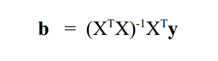
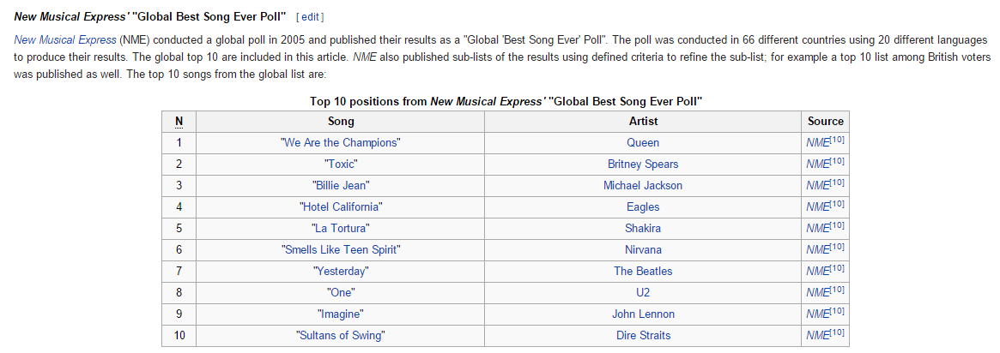
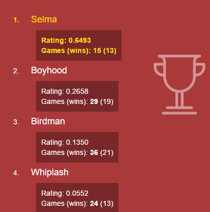

Ranking Everything w/ Sylvester
by James England
@JEinOKC
http://jameseng.land
A little background... Fall 2012
I had the wild idea to learn how computer rankings are made
A little background... Fall 2012
Eventually I discovered Statistical Models Applied to the Rating of Sports Teams" by Kenneth Massey
The Gist:
- Ratings based on "Linear Regression"
- Turns results of games into matrices & solve using math

The Weeds:
Theorem 2.1 
- b = resulting ranking score
- X = n x n matrix of teams
- y = n x 1 matrix of results
A little more history...
I built a complete model a few months later . . . using Java
because this is complex stuff and that's when you use Java, right?
- created a LAMP web interface to display results *
- generated ratings locally
- FTP'd json files to web server
* Did at least get my feet wet with AngularJS
Discovered Sylvester
Sylvester is a vector, matrix and geometry library for JavaScript, that runs in the browser and on the server side. It includes classes for modelling vectors and matrices in any number of dimensions, and for modelling infinite lines and planes in 3-dimensional space. It lets you write object-oriented easy-to-read code that mirrors the maths it represents.
- Original Project - http://sylvester.jcoglan.com/
- Node.js Implementation - https://github.com/NaturalNode/node-sylvester

Getting MEAN with Sylvester
Remember:
var matrix_X = myMatrices.gameMatrix;//an nxn matrix of games played
var matrix_Y = myMatrices.diffMatrix;//an nx1 matrix of game results
var matrix_xTrans = matrix_X.transpose();
var xTx = matrix_xTrans.x(matrix_X);
var xTy = matrix_xTrans.x(matrix_Y);
var xTx_array = xTx.elements;
var xTy_array = xTy.elements;
/*
Defining Full Rank:
A matrix is said to have full rank if its rank equals the largest possible for a matrix of the same dimensions, which is the lesser of the number of rows and columns
To Obtain 'full rank':
nth row of xTx is all 1s
nth row of xTy are all 0s
By setting row of xTy to 0, that means that 0 will be average. As values increase, ranking is improved
*/
for(var i=0;i<xTx_array[xTx_array.length-1].length;i++){
xTx_array[xTx_array.length-1][i] = 1;
}
xTx = Matrix.create(xTx_array);
for(i=0;i<xTy_array[xTy_array.length-1].length;i++){
xTy_array[xTy_array.length-1][i] = 0;
}
xTy = Matrix.create(xTy_array);
var xTx_Inverse = xTx.inv();
if(xTx_Inverse !== null){
console.log('inverse was created. Things going well..');
return xTx_Inverse.x(xTy); //BOOM!!
}
console.log("matrix is singular. Cannot create a ranking");
throw "matrix is singular. Cannot create a ranking";
The Results
Awesome!!
The Results
- Actually faster than Java implementation
- No more FTP'ing
- Generate new ratings with a click of a button when I wake up on Sunday mornings
Ranking Everything!!!!!
What else could use rankings like this?
- complex situations where results aren't necessary transitive
- 'Best of' lists where popularity saturates actual value - like The Academy Awards, Favorite TV Shows, Greatest Song Ever
A (bad) Example
The Greatest Song Ever
 https://en.wikipedia.org/wiki/List_of_songs_considered_the_best
Toxic?
2015 Academy Awards
Using Linear Regression

- Put out a link for people to vote head-to-head on their favorite nominated movies
- They could only vote on movies that they'd seen
- Actual Best Picture winner (Birdman) had most wins. Selma had highest rating, best winning %, but fewer wins
- Selma was released very late in December and it was believed that many voters did not have time to see it before turning in their votes
Live Demo
Links
- England Ratings - http://jameseng.land/Rank
- Oscar Matchups - http://jameseng.land/Oscars
- GitHub Project - https://github.com/JEinOKC/generic-ranking-methods
- npm install generic-ranking-methods
- Massey College Football Ranking Composite - http://www.masseyratings.com/cf/compare.htm